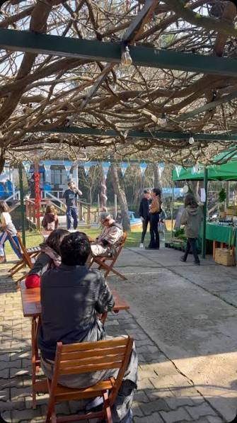
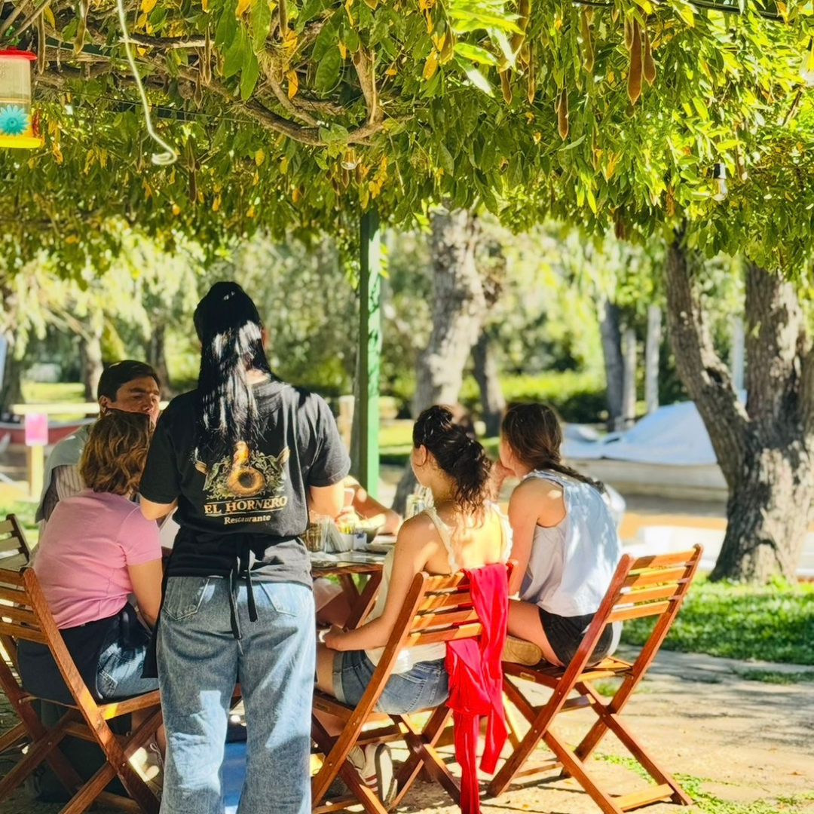
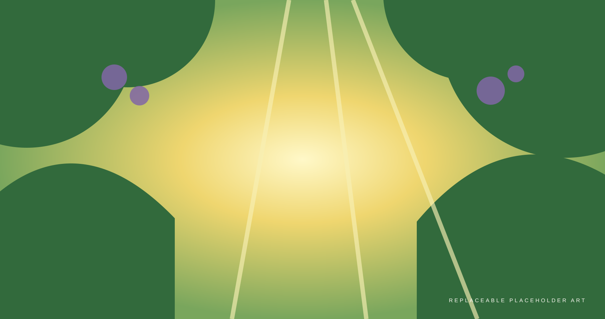
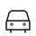

Tren Mitre
Desde Retiro hasta la estación Tigre.
Ver estación

Un lugar para quedarse un rato01 — Experiencia
Comida, madera, vegetación y aire de río se encuentran en Tres Bocas. El Hornero propone una pausa simple dentro del paisaje del Delta.

Entre glicinas, madera y luz del Delta.
02 — Cuaderno de campo
Una mirada a los sabores, el paisaje y los pequeños detalles que rodean la mesa.
Guía de viaje
Desde Palermo, San Telmo, Microcentro o La Boca, el paisaje cambia al acercarse a Tigre. Desde allí, la lancha continúa hacia Tres Bocas.
04 — Cómo llegar
Llegá a Tigre y continuá por agua hacia Tres Bocas. Verificá recorridos, frecuencias y disponibilidad con los operadores antes de viajar.
Desde Retiro hasta la estación Tigre.
Ver estaciónLlegá hasta la estación Delta, en Tigre.
Ver estación
Llegá por tierra hasta Tigre y continuá el recorrido desde allí.
Embarcá hacia Tres Bocas desde la estación fluvial.
Ver estación fluvial